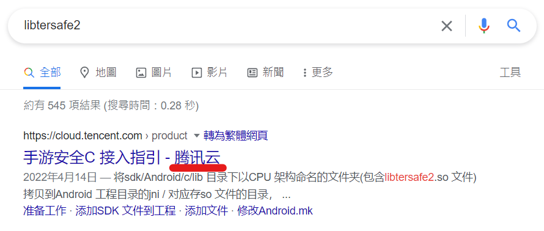
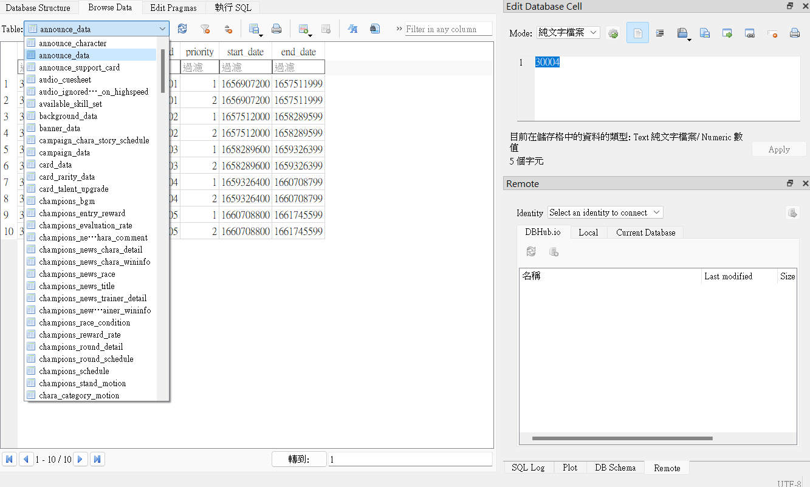
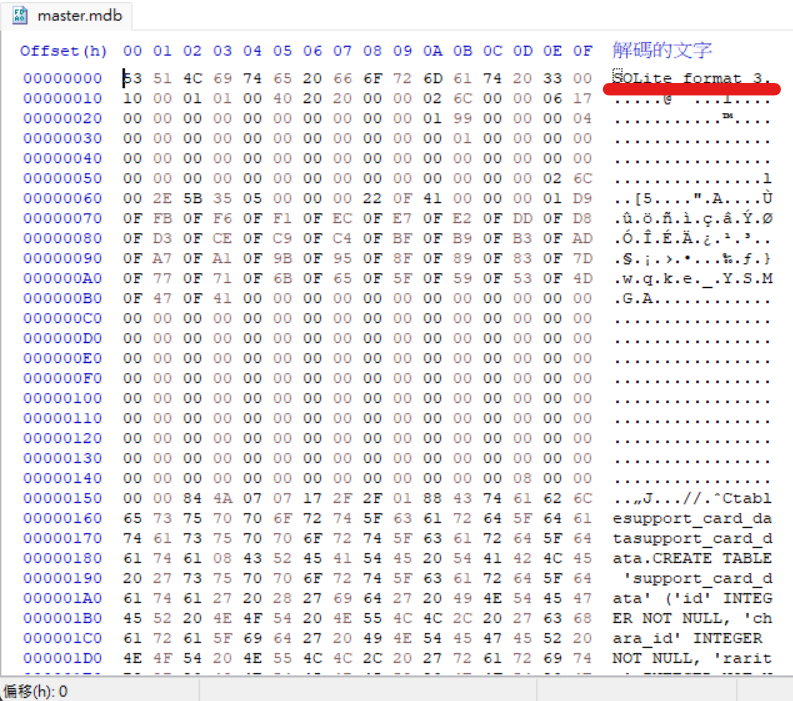

20220716-先傳初步認識好了
對，就如標題所說，這到底是甚麼營運模式，小萌的手法早就在巴哈傳得沸沸揚揚的了， 不過遊玩人數好像沒下降就是了，跟遊戲橘子一樣。反正資源包先抓出來，先來看一個比較有趣的東西:

嗯?你跟我想的一樣嗎，我不知道ㄟ乖乖丟Google:

恩，騰訊雲。好，不提了，來翻個資料，DB都翻過了，沒找到甚麼有趣的東西， 好像就這個可以拿出來講:

路徑為:
com.komoe.kmumamusumegp\files\master\master.mdb用HxD可以看到這是SQlite格式，應該是放甚麼參數的，很多Table，我也不確定。

一般多媒體檔在以下路徑，拆法也是AssetStudio，作法大同小異就不傳圖了:
com.komoe.kmumamusumegp\files\dat剩下的之後再處理，繼續掛列車(
by.SeaotterMS on 2022/7/16